Chapter 4 FP&A
In general, FP&A produce a business insight report after analyzed varying source of data. Their workflow includes 1) data extraction out of a database; 2) data validation; 3) thoroughly analysis; 4) graphic presentation; 5) reports in various forms; 6) dashboard. Although this chapter is written from FP&A point of view, techniques can be used by other accounting professionals.
4.1 Validation
Data is validated based on your expectation before detailed analysis. For instance, sales unit price is expected to be positive number. sales unit price multiply with sales quantity is expected to equal to sales amount.
sales_df <- read_csv(here::here('data/sales_df.csv'), name_repair = janitor::make_clean_names) library(validate)
out <- sales_df %>%
validate::check_that(
sales_unit_price > 0,
sales_unit_cost > 0,
sales_quantity > 0,
return_quantity >= 0,
discount_quantity >= 0,
discount_percent < 1,
sales_unit_price >= sales_unit_cost,
sales_quantity >= return_quantity,
sales_quantity >= discount_quantity,
abs((sales_unit_price * sales_quantity) - sales_amount) < 10,
abs((sales_unit_cost * sales_quantity) - total_cost) < 10,
sales_unit_price * return_quantity - return_amount < 10,
sales_unit_price * discount_percent * discount_quantity - discount_amount < 10,
sales_amount >= total_cost,
sales_amount >= return_amount,
sales_amount >= discount_amount,
end_date - start_date < 365)
summary(out)> name items passes fails nNA error warning
> 1 V01 155732 155732 0 0 FALSE FALSE
> 2 V02 155732 155732 0 0 FALSE FALSE
> 3 V03 155732 155732 0 0 FALSE FALSE
> 4 V04 155732 155732 0 0 FALSE FALSE
> 5 V05 155732 155732 0 0 FALSE FALSE
> 6 V06 155732 155732 0 0 FALSE FALSE
> 7 V07 155732 155732 0 0 FALSE FALSE
> 8 V08 155732 155732 0 0 FALSE FALSE
> 9 V09 155732 155732 0 0 FALSE FALSE
> 10 V10 155732 107634 48098 0 FALSE FALSE
> 11 V11 155732 114188 41544 0 FALSE FALSE
> 12 V12 155732 155732 0 0 FALSE FALSE
> 13 V13 155732 155732 0 0 FALSE FALSE
> 14 V14 155732 155732 0 0 FALSE FALSE
> 15 V15 155732 155732 0 0 FALSE FALSE
> 16 V16 155732 155732 0 0 FALSE FALSE
> 17 V17 155732 89831 65901 0 FALSE FALSE
> expression
> 1 sales_unit_price > 0
> 2 sales_unit_cost > 0
> 3 sales_quantity > 0
> 4 (return_quantity - 0) >= -1e-08
> 5 (discount_quantity - 0) >= -1e-08
> 6 discount_percent < 1
> 7 (sales_unit_price - sales_unit_cost) >= -1e-08
> 8 (sales_quantity - return_quantity) >= -1e-08
> 9 (sales_quantity - discount_quantity) >= -1e-08
> 10 abs((sales_unit_price * sales_quantity) - sales_amount) < 10
> 11 abs((sales_unit_cost * sales_quantity) - total_cost) < 10
> 12 sales_unit_price * return_quantity - return_amount < 10
> 13 sales_unit_price * discount_percent * discount_quantity - discount_amount < 10
> 14 (sales_amount - total_cost) >= -1e-08
> 15 (sales_amount - return_amount) >= -1e-08
> 16 (sales_amount - discount_amount) >= -1e-08
> 17 end_date - start_date < 365v_amt <- validate::violating(sales_df, out[10:11])
v_date <- validate::violating(sales_df, out[17]) plot(out)knitr::include_graphics("img/fpa_validation_p1.png")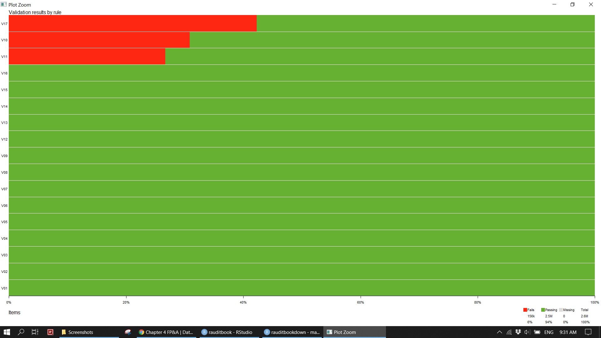
Surprisingly, sales unit price multiply with sales quantity does not equal to sales amount. Those outlier are filter out to be examined in detail. If you were an external auditor and should pay a special attention to those as the sum of those immaterial misstatements becomes significantly material. Furthermore, it is unusual that promotion period (end date minus start date) is more than one year. It could be an error that stores whose status is off incur staff and rental cost. Since the illustration based on dummy data, those discreteness will be ignored subsequently.
sales_df[sample(nrow(sales_df), 2000), ] %>%
ggplot(aes(x = sales_amount, y = sales_unit_price * sales_quantity)) +
geom_point(size = 1, alpha = 0.2) knitr::include_graphics('img/fpa_validation_p2.png')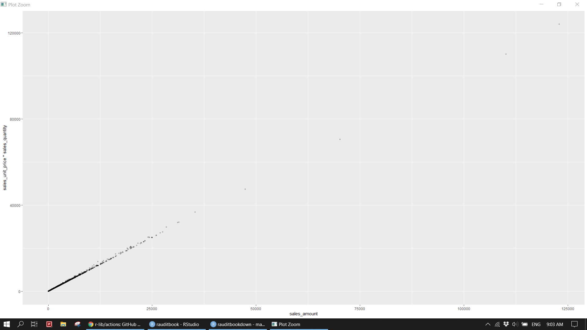
d_amt <- sales_df %>%
mutate(out_sales = sales_unit_price * sales_quantity,
res_sales = ifelse(abs(out_sales - sales_amount) < 10, "pass", 'fail'),
out_cost = sales_unit_cost * sales_quantity,
res_cost = ifelse(abs(out_cost - total_cost) < 10, "pass", 'fail')) %>%
dplyr::filter(res_sales == "fail" | res_cost == "fail")
anti_join(v_amt, d_amt)> # A tibble: 0 x 27
> # ... with 27 variables: sales_unit_price <dbl>, sales_quantity <dbl>,
> # sales_amount <dbl>, sales_unit_cost <dbl>, total_cost <dbl>,
> # return_quantity <dbl>, return_amount <dbl>, discount_quantity <dbl>,
> # discount_amount <dbl>, discount_percent <dbl>, promotion_name <chr>,
> # start_date <dttm>, end_date <dttm>, channel_name <chr>, store_type <chr>,
> # store_name <chr>, status <chr>, employee_count <dbl>,
> # selling_area_size <dbl>, continent_name <chr>, ...d_amt %>%
transmute(diff_sales = sales_unit_price * sales_quantity - sales_amount,
diff_cost = sales_unit_cost * sales_quantity - total_cost) %>%
summarise(diff_total_sales = sum(diff_sales),
diff_total_cost = sum(diff_cost))> # A tibble: 1 x 2
> diff_total_sales diff_total_cost
> <dbl> <dbl>
> 1 7130133. 6855349.d_date <- sales_df %>%
mutate(period = end_date - start_date) %>%
dplyr::filter(period > 365)
anti_join(v_date, d_date)> # A tibble: 0 x 27
> # ... with 27 variables: sales_unit_price <dbl>, sales_quantity <dbl>,
> # sales_amount <dbl>, sales_unit_cost <dbl>, total_cost <dbl>,
> # return_quantity <dbl>, return_amount <dbl>, discount_quantity <dbl>,
> # discount_amount <dbl>, discount_percent <dbl>, promotion_name <chr>,
> # start_date <dttm>, end_date <dttm>, channel_name <chr>, store_type <chr>,
> # store_name <chr>, status <chr>, employee_count <dbl>,
> # selling_area_size <dbl>, continent_name <chr>, ...count(sales_df, status)> # A tibble: 2 x 2
> status n
> * <chr> <int>
> 1 Off 3090
> 2 On 152642sales_df %>%
dplyr::filter(status == 'Off' & (employee_count > 0 | selling_area_size > 0))> # A tibble: 3,090 x 27
> sales_unit_price sales_quantity sales_amount sales_unit_cost total_cost
> <dbl> <dbl> <dbl> <dbl> <dbl>
> 1 15.0 180 2698. 7.64 1375.
> 2 25.0 360 8996. 12.7 4586.
> 3 120. 4 480. 61.2 245.
> 4 269 4 1076 137. 549.
> 5 76.0 4 304. 38.7 155.
> 6 16.9 4 67.6 8.62 34.5
> 7 76.0 4 304. 38.7 155.
> 8 39.9 4 160. 20.3 81.4
> 9 110. 4 440. 56.1 224.
> 10 270. 4 1080. 138. 550.
> # ... with 3,080 more rows, and 22 more variables: return_quantity <dbl>,
> # return_amount <dbl>, discount_quantity <dbl>, discount_amount <dbl>,
> # discount_percent <dbl>, promotion_name <chr>, start_date <dttm>,
> # end_date <dttm>, channel_name <chr>, store_type <chr>, store_name <chr>,
> # status <chr>, employee_count <dbl>, selling_area_size <dbl>,
> # continent_name <chr>, region_country_name <chr>, product_name <chr>,
> # product_subcategory <chr>, product_category <chr>, manufacturer <chr>, ...4.2 EDA
We will focus on columns of class name, product category, manufacturer, store type, and sales unit price. Columns of promotion name, start date, end date, status, channel name, brand name, and continent are left unused.
4.2.1 Categorical
sales_df %>%
select(where(is.character)) %>%
skimr::skim()knitr::include_graphics("img/skim1.png")
Quickly extract categorical variables with less than 10 unique values and then explore them. 1. 69% of sales is done via store across the world. 16% is done by online. Only US uses catalog. China, Germany, and US use online. 2. 50% of sales of expensive computers (50%) is from a supplier (Proseware, Inc.).
sales_df %>%
select_if(is.character) %>%
gather(colvar, value) %>%
group_by(colvar) %>%
summarise(uniq = n_distinct(value)) %>%
dplyr::filter(uniq <= 10) %>%
pull(colvar) %>%
dput()> c("brand_name", "channel_name", "class_name", "continent_name",
> "manufacturer", "product_category", "promotion_name", "status",
> "store_type")sales_df %>%
select(c("brand_name", "channel_name", "class_name", "continent_name", "manufacturer",
"product_category", "promotion_name", "status", "store_type")) %>%
map(table)> $brand_name
>
> A. Datum Adventure Works Contoso
> 13979 11225 50214
> Fabrikam Litware Northwind Traders
> 15958 3521 1905
> Proseware Southridge Video The Phone Company
> 17719 16407 14352
> Wide World Importers
> 10452
>
> $channel_name
>
> Catalog Online Reseller Store
> 6277 24200 18035 107220
>
> $class_name
>
> Deluxe Economy Regular
> 18131 54040 83561
>
> $continent_name
>
> Asia Europe North America
> 44831 39907 70994
>
> $manufacturer
>
> A. Datum Corporation Adventure Works Contoso, Ltd
> 13979 11225 50214
> Fabrikam, Inc. Litware, Inc. Northwind Traders
> 15958 3521 1905
> Proseware, Inc. Southridge Video The Phone Company
> 17719 16407 14352
> Wide World Importers
> 10452
>
> $product_category
>
> Audio Cameras and camcorders
> 7215 36375
> Cell phones Computers
> 26893 56901
> Music, Movies and Audio Books TV and Video
> 8385 19963
>
> $promotion_name
>
> Asian Holiday Promotion Asian Spring Promotion
> 8757 10758
> Asian Summer Promotion European Back-to-Scholl Promotion
> 4594 5983
> European Holiday Promotion European Spring Promotion
> 16699 6537
> No Discount North America Back-to-School Promotion
> 61480 8695
> North America Holiday Promotion North America Spring Promotion
> 15621 16608
>
> $status
>
> Off On
> 3090 152642
>
> $store_type
>
> Catalog Online Reseller Store
> 6277 24200 18035 107220prop.table(table(sales_df$channel_name, sales_df$store_type))>
> Catalog Online Reseller Store
> Catalog 0.04030642 0.00000000 0.00000000 0.00000000
> Online 0.00000000 0.15539517 0.00000000 0.00000000
> Reseller 0.00000000 0.00000000 0.11580793 0.00000000
> Store 0.00000000 0.00000000 0.00000000 0.68849048addmargins(table(sales_df$region_country_name, sales_df$store_type), FUN = list(Total = sum), quiet = TRUE)>
> Catalog Online Reseller Store Total
> Armenia 0 0 0 850 850
> Australia 0 0 0 2728 2728
> Bhutan 0 0 0 979 979
> Canada 0 0 0 2753 2753
> China 0 9190 7311 4732 21233
> Denmark 0 0 0 541 541
> France 0 0 5097 3271 8368
> Germany 0 8508 0 5093 13601
> Greece 0 0 0 519 519
> India 0 0 0 2674 2674
> Iran 0 0 0 1705 1705
> Ireland 0 0 0 508 508
> Italy 0 0 0 1925 1925
> Japan 0 0 0 5569 5569
> Kyrgyzstan 0 0 0 900 900
> Malta 0 0 0 514 514
> Pakistan 0 0 0 1345 1345
> Poland 0 0 0 579 579
> Portugal 0 0 0 496 496
> Romania 0 0 0 507 507
> Russia 0 0 0 2222 2222
> Singapore 0 0 0 930 930
> Slovenia 0 0 0 536 536
> South Korea 0 0 0 1220 1220
> Spain 0 0 0 560 560
> Sweden 0 0 0 511 511
> Switzerland 0 0 0 530 530
> Syria 0 0 0 1182 1182
> Taiwan 0 0 0 764 764
> Thailand 0 0 0 1089 1089
> the Netherlands 0 0 0 537 537
> Turkmenistan 0 0 0 1663 1663
> United Kingdom 0 0 0 7453 7453
> United States 6277 6502 5627 49835 68241
> Total 6277 24200 18035 107220 155732ftable(xtabs(~ product_category + class_name, data = sales_df))> class_name Deluxe Economy Regular
> product_category
> Audio 923 4393 1899
> Cameras and camcorders 4277 10561 21537
> Cell phones 4495 6011 16387
> Computers 5164 24751 26986
> Music, Movies and Audio Books 2769 1657 3959
> TV and Video 503 6667 12793ftable(table(sales_df$manufacturer, sales_df$product_category, sales_df$class_name))> Deluxe Economy Regular
>
> A. Datum Corporation Audio 0 0 0
> Cameras and camcorders 1697 2996 9286
> Cell phones 0 0 0
> Computers 0 0 0
> Music, Movies and Audio Books 0 0 0
> TV and Video 0 0 0
> Adventure Works Audio 0 0 0
> Cameras and camcorders 0 0 0
> Cell phones 0 0 0
> Computers 849 2571 4214
> Music, Movies and Audio Books 0 0 0
> TV and Video 221 1573 1797
> Contoso, Ltd Audio 643 1609 759
> Cameras and camcorders 824 4618 3222
> Cell phones 1550 4142 6849
> Computers 942 9445 6100
> Music, Movies and Audio Books 1401 839 1967
> TV and Video 0 951 4353
> Fabrikam, Inc. Audio 0 0 0
> Cameras and camcorders 1756 2947 9029
> Cell phones 0 0 0
> Computers 0 294 1932
> Music, Movies and Audio Books 0 0 0
> TV and Video 0 0 0
> Litware, Inc. Audio 0 0 0
> Cameras and camcorders 0 0 0
> Cell phones 0 0 0
> Computers 0 0 0
> Music, Movies and Audio Books 0 0 0
> TV and Video 39 1142 2340
> Northwind Traders Audio 0 1609 296
> Cameras and camcorders 0 0 0
> Cell phones 0 0 0
> Computers 0 0 0
> Music, Movies and Audio Books 0 0 0
> TV and Video 0 0 0
> Proseware, Inc. Audio 0 0 0
> Cameras and camcorders 0 0 0
> Cell phones 0 0 0
> Computers 2534 4955 10230
> Music, Movies and Audio Books 0 0 0
> TV and Video 0 0 0
> Southridge Video Audio 0 0 0
> Cameras and camcorders 0 0 0
> Cell phones 0 0 0
> Computers 64 4212 406
> Music, Movies and Audio Books 1368 818 1992
> TV and Video 243 3001 4303
> The Phone Company Audio 0 0 0
> Cameras and camcorders 0 0 0
> Cell phones 2945 1869 9538
> Computers 0 0 0
> Music, Movies and Audio Books 0 0 0
> TV and Video 0 0 0
> Wide World Importers Audio 280 1175 844
> Cameras and camcorders 0 0 0
> Cell phones 0 0 0
> Computers 775 3274 4104
> Music, Movies and Audio Books 0 0 0
> TV and Video 0 0 0Plot categorical variables based on frequency count. Refer to ggplot2: elegant graphics for data analysis to learn how to plot.
sales_df%>%
ggplot(aes(x = class_name, fill = class_name)) +
geom_bar(width = .2, show.legend = FALSE) +
geom_text(aes(label = ..count..), stat = "count", vjust = 1.5) +
scale_y_continuous(labels = scales::comma) +
labs(x = NULL, y = NULL)knitr::include_graphics("img/fpa_eda_p1.png")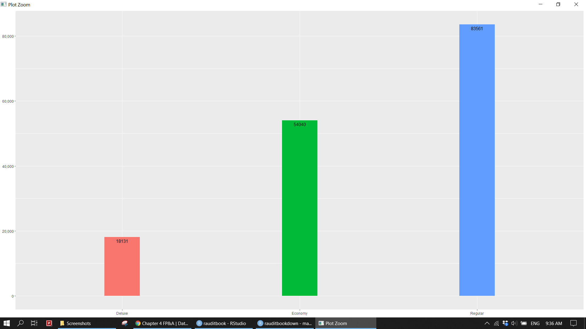
sales_df %>%
count(product_category, class_name, manufacturer, store_type) %>%
pivot_longer(-n,
names_to = "var",
values_to = "val") %>%
mutate(val = tidytext::reorder_within(val, n, var, sum)) %>%
ggplot(aes(n, val)) +
geom_col() +
tidytext::scale_y_reordered() +
facet_wrap(~var, scales = 'free_y') +
labs(x = NULL, y = NULL)knitr::include_graphics("img/fpa_eda_p2.png")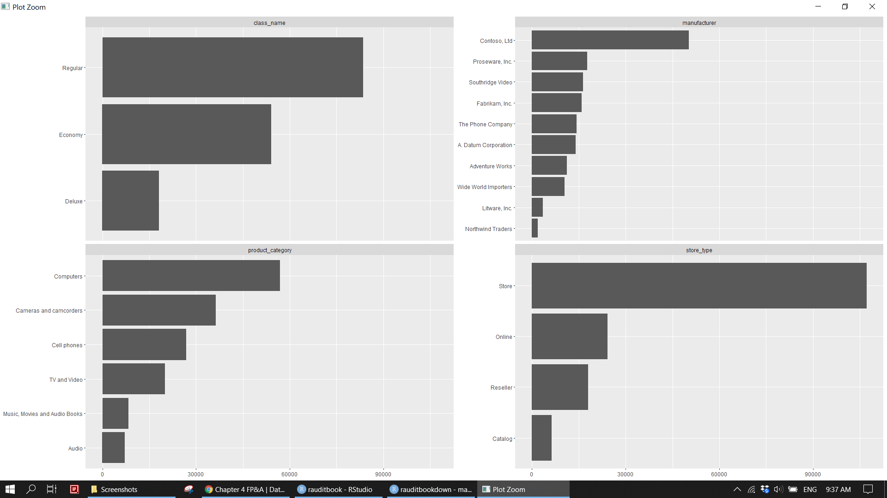
Reshape the data from a long format to a wide format. filter data based on the specified conditions and count a variable.
sales_df %>%
count(class_name, product_category, manufacturer, store_type) %>%
spread(store_type, n, fill = 0)> # A tibble: 57 x 7
> class_name product_category manufacturer Catalog Online Reseller Store
> <chr> <chr> <chr> <dbl> <dbl> <dbl> <dbl>
> 1 Deluxe Audio Contoso, Ltd 20 80 55 488
> 2 Deluxe Audio Wide World I~ 12 46 50 172
> 3 Deluxe Cameras and camcorders A. Datum Cor~ 66 230 173 1228
> 4 Deluxe Cameras and camcorders Contoso, Ltd 37 133 114 540
> 5 Deluxe Cameras and camcorders Fabrikam, In~ 74 276 221 1185
> 6 Deluxe Cell phones Contoso, Ltd 71 243 203 1033
> 7 Deluxe Cell phones The Phone Co~ 112 508 392 1933
> 8 Deluxe Computers Adventure Wo~ 38 124 103 584
> 9 Deluxe Computers Contoso, Ltd 41 161 151 589
> 10 Deluxe Computers Proseware, I~ 92 370 282 1790
> # ... with 47 more rowssales_df %>%
dplyr::filter(region_country_name == 'United States') %>%
count(store_name)> # A tibble: 198 x 2
> store_name n
> * <chr> <int>
> 1 Contoso Albany Store 280
> 2 Contoso Alexandria Store 266
> 3 Contoso Anchorage Store 244
> 4 Contoso Annapolis Store 271
> 5 Contoso Appleton Store 279
> 6 Contoso Arlington Store 258
> 7 Contoso Atlantic City Store 275
> 8 Contoso Attleboro Store 243
> 9 Contoso Aurora Store 282
> 10 Contoso Austin Store 255
> # ... with 188 more rowssales_df %>%
group_by(store_name) %>%
dplyr::filter(n() > 8000) %>%
count(store_name)> # A tibble: 2 x 2
> # Groups: store_name [2]
> store_name n
> <chr> <int>
> 1 Contoso Asia Online Store 9190
> 2 Contoso Europe Online Store 85084.2.2 Numeric
This section focus on sales_unit_price.
1. sd of return_quantity, discount_quantity, and discount_percent is small. Their fraud risk is low.
2. sales_unit_price is skewed. However, it shows a normal distribution at the level product category.
sales_df %>%
select_if(is.numeric) %>%
skimr::skim() %>%
dplyr::filter(numeric.sd < 3)skimr::skim(sales_df, sales_unit_price)
sales_df %>%
group_by(product_name) %>%
skimr::skim(sales_unit_price) %>%
dplyr::filter(numeric.sd != 0) knitr::include_graphics("img/skim2.png")Plot numeric variables. 1. There is a a linear relationship between sales unit price and sales unit cost. 2. Most of sales is below 100. Popular products have price below 500 and cost below 250.
sales_df %>%
ggplot(aes(sales_unit_price)) +
geom_histogram(aes(y = ..density..), binwidth = 35) +
geom_density(color = 'red') +
geom_rug() knitr::include_graphics("img/fpa_eda_p3.png")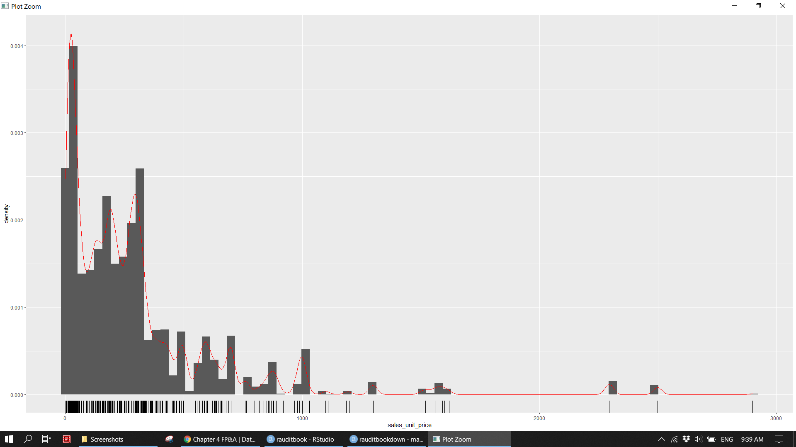
sales_df %>%
ggplot(aes(sales_unit_price, sales_unit_cost, z = sales_quantity)) +
stat_summary_hex(bins = 35, alpha = 0.5) +
geom_smooth() knitr::include_graphics("img/fpa_eda_p4.png")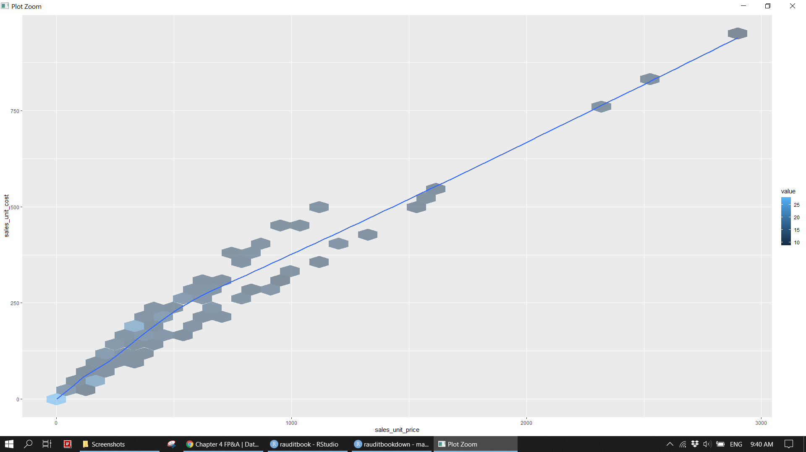
- 52% of revenue comes from regular class products (Computers, Cameras and camcorders, TV and Video) with price ranging from 100 to 1,000.
summarizesales unit price of different manufacturer within a class name and product category.summarizesales unit price by product name when class name is Deluxe.
sales_df %>%
group_by(cut = cut(sales_unit_price, breaks = c(0, 1, 100, 1000, 2000, 3000)),
class_name, product_category) %>%
summarise(total_sales_quantity = sum(sales_quantity),
total_sales_amount = sum(sales_amount),
cut_pct_sales_amount = round(total_sales_amount / sum(sales_df$sales_amount), 2),
.groups = 'drop') %>%
arrange(-cut_pct_sales_amount) > # A tibble: 41 x 6
> cut class_name product_category total_sales_quan~ total_sales_amo~
> <fct> <chr> <chr> <dbl> <dbl>
> 1 (100,1e+03] Regular Computers 304943 125813827.
> 2 (100,1e+03] Regular Cameras and camc~ 249164 113427331.
> 3 (100,1e+03] Regular TV and Video 154768 67684579.
> 4 (2e+03,3e+03] Deluxe Computers 16579 38894182.
> 5 (100,1e+03] Regular Cell phones 126686 34144060.
> 6 (100,1e+03] Economy Computers 118495 24821503.
> 7 (1e+03,2e+03] Deluxe Cameras and camc~ 16204 24913696.
> 8 (100,1e+03] Deluxe Cameras and camc~ 33642 14400906.
> 9 (100,1e+03] Economy Cameras and camc~ 71316 15073062.
> 10 (100,1e+03] Deluxe Cell phones 40044 13470115.
> # ... with 31 more rows, and 1 more variable: cut_pct_sales_amount <dbl>sales_df %>%
dplyr::filter(near(sales_unit_price, max(sales_unit_price), tol = sd(sales_unit_price)))> # A tibble: 66 x 27
> sales_unit_price sales_quantity sales_amount sales_unit_cost total_cost
> <dbl> <dbl> <dbl> <dbl> <dbl>
> 1 2900. 9 24360. 961. 8647.
> 2 2900. 10 29000. 961. 9608.
> 3 2900. 6 17400. 961. 5765.
> 4 2900. 6 17400. 961. 5765.
> 5 2900. 20 58000. 961. 19216.
> 6 2900. 6 16820. 961. 5765.
> 7 2900. 10 29000. 961. 8647.
> 8 2900. 6 17110. 961. 5765.
> 9 2900. 6 16240. 961. 5765.
> 10 2900. 30 87000. 961. 27864.
> # ... with 56 more rows, and 22 more variables: return_quantity <dbl>,
> # return_amount <dbl>, discount_quantity <dbl>, discount_amount <dbl>,
> # discount_percent <dbl>, promotion_name <chr>, start_date <dttm>,
> # end_date <dttm>, channel_name <chr>, store_type <chr>, store_name <chr>,
> # status <chr>, employee_count <dbl>, selling_area_size <dbl>,
> # continent_name <chr>, region_country_name <chr>, product_name <chr>,
> # product_subcategory <chr>, product_category <chr>, manufacturer <chr>, ...sales_df %>%
dplyr::filter(between(sales_unit_price, 0, 1))> # A tibble: 318 x 27
> sales_unit_price sales_quantity sales_amount sales_unit_cost total_cost
> <dbl> <dbl> <dbl> <dbl> <dbl>
> 1 0.95 26 24.7 0.48 12.5
> 2 0.95 13 12.4 0.48 6.24
> 3 0.95 18 17.1 0.48 8.64
> 4 0.95 18 17.1 0.48 8.64
> 5 0.95 18 17.1 0.48 8.64
> 6 0.95 24 21.1 0.48 11.5
> 7 0.95 36 33.8 0.48 17.3
> 8 0.95 9 8.55 0.48 3.84
> 9 0.95 24 22.8 0.48 11.5
> 10 0.95 18 17.1 0.48 8.64
> # ... with 308 more rows, and 22 more variables: return_quantity <dbl>,
> # return_amount <dbl>, discount_quantity <dbl>, discount_amount <dbl>,
> # discount_percent <dbl>, promotion_name <chr>, start_date <dttm>,
> # end_date <dttm>, channel_name <chr>, store_type <chr>, store_name <chr>,
> # status <chr>, employee_count <dbl>, selling_area_size <dbl>,
> # continent_name <chr>, region_country_name <chr>, product_name <chr>,
> # product_subcategory <chr>, product_category <chr>, manufacturer <chr>, ...sales_df %>%
transmute(new_number = 1000 *(sales_unit_price %/% 1000)) %>%
count(new_number)> # A tibble: 3 x 2
> new_number n
> * <dbl> <int>
> 1 0 150875
> 2 1000 3349
> 3 2000 1508sales_df %>%
group_by(class_name, product_category, manufacturer, store_type) %>%
summarise(across(c(sales_unit_price), tibble::lst(first, last, min, max, mean, median)))> # A tibble: 228 x 10
> # Groups: class_name, product_category, manufacturer [57]
> class_name product_category manufacturer store_type sales_unit_price~
> <chr> <chr> <chr> <chr> <dbl>
> 1 Deluxe Audio Contoso, Ltd Catalog 299.
> 2 Deluxe Audio Contoso, Ltd Online 299.
> 3 Deluxe Audio Contoso, Ltd Reseller 299.
> 4 Deluxe Audio Contoso, Ltd Store 299.
> 5 Deluxe Audio Wide World Im~ Catalog 296
> 6 Deluxe Audio Wide World Im~ Online 296
> 7 Deluxe Audio Wide World Im~ Reseller 296
> 8 Deluxe Audio Wide World Im~ Store 296
> 9 Deluxe Cameras and camcorders A. Datum Corp~ Catalog 290
> 10 Deluxe Cameras and camcorders A. Datum Corp~ Online 290
> # ... with 218 more rows, and 5 more variables: sales_unit_price_last <dbl>,
> # sales_unit_price_min <dbl>, sales_unit_price_max <dbl>,
> # sales_unit_price_mean <dbl>, sales_unit_price_median <dbl>sales_df %>%
group_by(product_name) %>%
summarise(across(c(sales_unit_price), tibble::lst(min, max, mean, median)),
total_price_sales_amount = sum(sales_amount[sales_unit_price > median(sales_unit_price)]),
total_class_sales_amount = sum(sales_amount[class_name == 'Deluxe'])) > # A tibble: 1,689 x 7
> product_name sales_unit_price~ sales_unit_price~ sales_unit_price~
> * <chr> <dbl> <dbl> <dbl>
> 1 A. Datum Advanced Digi~ 188. 188. 188.
> 2 A. Datum Advanced Digi~ 188. 188. 188.
> 3 A. Datum Advanced Digi~ 188. 188. 188.
> 4 A. Datum Advanced Digi~ 188. 188. 188.
> 5 A. Datum Advanced Digi~ 188. 188. 188.
> 6 A. Datum Advanced Digi~ 188. 188. 188.
> 7 A. Datum Advanced Digi~ 188. 188. 188.
> 8 A. Datum All in One Di~ 188 188 188
> 9 A. Datum All in One Di~ 188 188 188
> 10 A. Datum All in One Di~ 188 188 188
> # ... with 1,679 more rows, and 3 more variables:
> # sales_unit_price_median <dbl>, total_price_sales_amount <dbl>,
> # total_class_sales_amount <dbl>sales_df %>%
dplyr::filter(class_name == "Deluxe",
product_category == "Cameras and camcorders",
manufacturer == "Fabrikam, Inc.",
store_type == 'Store') > # A tibble: 1,185 x 27
> sales_unit_price sales_quantity sales_amount sales_unit_cost total_cost
> <dbl> <dbl> <dbl> <dbl> <dbl>
> 1 657 13 8541 218. 2830.
> 2 645 8 5160 214. 1710.
> 3 657 8 5256 218. 1741.
> 4 657 8 5256 218. 1741.
> 5 645 8 5160 214. 1710.
> 6 657 13 8541 218. 2830.
> 7 1560 8 12480 517. 4135.
> 8 1560 8 12480 517. 4135.
> 9 645 8 4773 214. 1710.
> 10 645 8 4773 214. 1710.
> # ... with 1,175 more rows, and 22 more variables: return_quantity <dbl>,
> # return_amount <dbl>, discount_quantity <dbl>, discount_amount <dbl>,
> # discount_percent <dbl>, promotion_name <chr>, start_date <dttm>,
> # end_date <dttm>, channel_name <chr>, store_type <chr>, store_name <chr>,
> # status <chr>, employee_count <dbl>, selling_area_size <dbl>,
> # continent_name <chr>, region_country_name <chr>, product_name <chr>,
> # product_subcategory <chr>, product_category <chr>, manufacturer <chr>, ...4.3 Business ananlysis
4.3.1 Product profit margin
- There is no unusual profit margin for each product name in the cases of return or discount.
- Profit margin percentage (average 50%) of each product name remains unchanged within each country.
- Top 5 the most sold products only take 1% of revenue. There is no concentration risk.
- Top 3 sales amount of product name from each product category.
summarizethe whole dataset based on class name, product category, manufacturer, store type.
sales_df %>%
dplyr::filter(discount_quantity > 0, return_quantity > 0) %>%
mutate(pm_pct = (sales_unit_price - sales_unit_cost) / sales_unit_price) %>%
group_by(product_name) %>%
summarise(across(c(discount_quantity, discount_amount, return_quantity, return_amount,
sales_quantity, sales_amount), sum),
discount_amount_pct = discount_amount / sales_amount,
return_amount_pct = return_amount / sales_amount,
avg_pm_pct = mean(pm_pct)) > # A tibble: 1,680 x 10
> product_name discount_quanti~ discount_amount return_quantity return_amount
> * <chr> <dbl> <dbl> <dbl> <dbl>
> 1 A. Datum Adva~ 52 1480. 19 3582.
> 2 A. Datum Adva~ 72 1823. 26 4901
> 3 A. Datum Adva~ 62 1638. 22 4147
> 4 A. Datum Adva~ 72 1840. 25 4712.
> 5 A. Datum Adva~ 52 1529. 21 3958.
> 6 A. Datum Adva~ 87 2132. 27 5090.
> 7 A. Datum Adva~ 81 1942. 27 5090.
> 8 A. Datum All ~ 12 226. 4 752
> 9 A. Datum All ~ 29 726. 16 3008
> 10 A. Datum All ~ 39 996. 14 2632
> # ... with 1,670 more rows, and 5 more variables: sales_quantity <dbl>,
> # sales_amount <dbl>, discount_amount_pct <dbl>, return_amount_pct <dbl>,
> # avg_pm_pct <dbl>sales_df %>%
mutate(pm_pct = (sales_unit_price - sales_unit_cost) / sales_unit_price) %>%
group_by(product_name, region_country_name) %>%
summarise(across(c(pm_pct), tibble::lst(min, max, mean, median))) %>%
dplyr::filter(pm_pct_min != pm_pct_max, pm_pct_mean != pm_pct_median) > # A tibble: 0 x 6
> # Groups: product_name [0]
> # ... with 6 variables: product_name <chr>, region_country_name <chr>,
> # pm_pct_min <dbl>, pm_pct_max <dbl>, pm_pct_mean <dbl>, pm_pct_median <dbl>sales_df %>%
mutate(pm_pct = (sales_unit_price - sales_unit_cost) / sales_unit_price) %>%
mutate(product = fct_lump(product_name, 5)) %>%
group_by(product) %>%
summarise(across(c(sales_quantity, sales_amount), sum),
avg_pm_pct = mean(pm_pct),
total_sales_pct = sales_amount / sum(sales_df$sales_amount))> # A tibble: 8 x 5
> product sales_quantity sales_amount avg_pm_pct total_sales_pct
> * <fct> <dbl> <dbl> <dbl> <dbl>
> 1 Contoso Phone with 13-~ 2229 37369. 0.540 0.0000656
> 2 Fabrikam Trendsetter 1~ 2195 2169738. 0.669 0.00381
> 3 Proseware All-In-One P~ 2087 280983. 0.540 0.000493
> 4 Proseware LCD17W E202 ~ 1861 236309. 0.490 0.000415
> 5 SV Car Video TFT7 M700~ 2201 652008. 0.490 0.00114
> 6 The Phone Company PDA ~ 2197 581941. 0.540 0.00102
> 7 The Phone Company Smar~ 1684 215098. 0.490 0.000378
> 8 Other 2272925 565308999. 0.545 0.993sales_df %>%
mutate(pm_pct = (sales_unit_price - sales_unit_cost) / sales_unit_price) %>%
group_by(product_category, product_name) %>%
summarise(across(c(sales_quantity, sales_amount), sum),
avg_pm_pct = mean(pm_pct)) %>%
slice_max(order_by = sales_amount, n = 3)> # A tibble: 18 x 5
> # Groups: product_category [6]
> product_category product_name sales_quantity sales_amount avg_pm_pct
> <chr> <chr> <dbl> <dbl> <dbl>
> 1 Audio "Contoso 8GB Cloc~ 2045 604561. 0.669
> 2 Audio "Contoso 8GB Cloc~ 1852 549003. 0.669
> 3 Audio "Contoso 8GB Cloc~ 1793 531711. 0.669
> 4 Cameras and camcor~ "Fabrikam Indepen~ 1731 2771933. 0.669
> 5 Cameras and camcor~ "Fabrikam Indepen~ 1525 2265750 0.669
> 6 Cameras and camcor~ "Fabrikam Trendse~ 2195 2169738. 0.669
> 7 Cell phones "Cigarette Lighte~ 26400 659352. 0.490
> 8 Cell phones "The Phone Compan~ 2147 637178. 0.540
> 9 Cell phones "The Phone Compan~ 2098 621606 0.540
> 10 Computers "Proseware Projec~ 1924 4773190. 0.669
> 11 Computers "Proseware Projec~ 1736 4292782. 0.669
> 12 Computers "Contoso Projecto~ 1645 3712690. 0.669
> 13 Music, Movies and ~ "Contoso DVD 15-I~ 1510 432433. 0.669
> 14 Music, Movies and ~ "SV DVD 15-Inch P~ 1490 425995. 0.669
> 15 Music, Movies and ~ "SV DVD 15-Inch P~ 1464 417681. 0.669
> 16 TV and Video "Contoso Home The~ 1653 1451764. 0.669
> 17 TV and Video "Contoso Home The~ 1578 1383240. 0.669
> 18 TV and Video "Contoso Home The~ 1494 1309052. 0.669sales_df %>%
mutate(pm_pct = (sales_unit_price - sales_unit_cost) / sales_unit_price) %>%
group_by(class_name, product_category, manufacturer, store_type) %>%
summarise(across(c(sales_unit_price, pm_pct), tibble::lst(min, max)),
across(c(sales_quantity, sales_amount), tibble::lst(sum)),
no_of_store = n_distinct(store_name)) > # A tibble: 228 x 11
> # Groups: class_name, product_category, manufacturer [57]
> class_name product_category manufacturer store_type sales_unit_price~
> <chr> <chr> <chr> <chr> <dbl>
> 1 Deluxe Audio Contoso, Ltd Catalog 299.
> 2 Deluxe Audio Contoso, Ltd Online 299.
> 3 Deluxe Audio Contoso, Ltd Reseller 299.
> 4 Deluxe Audio Contoso, Ltd Store 299.
> 5 Deluxe Audio Wide World Im~ Catalog 250.
> 6 Deluxe Audio Wide World Im~ Online 250.
> 7 Deluxe Audio Wide World Im~ Reseller 250.
> 8 Deluxe Audio Wide World Im~ Store 250.
> 9 Deluxe Cameras and camcorders A. Datum Corp~ Catalog 281
> 10 Deluxe Cameras and camcorders A. Datum Corp~ Online 281
> # ... with 218 more rows, and 6 more variables: sales_unit_price_max <dbl>,
> # pm_pct_min <dbl>, pm_pct_max <dbl>, sales_quantity_sum <dbl>,
> # sales_amount_sum <dbl>, no_of_store <int>sales_df %>%
nest(data = -c(class_name, product_category, manufacturer, store_type)) %>%
mutate(new = map(data, ~.x[['sales_unit_price']][20])) %>%
unnest(new)> # A tibble: 228 x 6
> store_type product_category manufacturer class_name data new
> <chr> <chr> <chr> <chr> <lis> <dbl>
> 1 Store Cell phones The Phone Company Regular <tbl~ 301
> 2 Store Cell phones Contoso, Ltd Regular <tbl~ 36.0
> 3 Store Computers Proseware, Inc. Regular <tbl~ 160
> 4 Store TV and Video Adventure Works Regular <tbl~ 470.
> 5 Store Computers Contoso, Ltd Regular <tbl~ 499
> 6 Store Cameras and camcorders Contoso, Ltd Economy <tbl~ 40.0
> 7 Store Computers Wide World Importers Economy <tbl~ 129
> 8 Store Cameras and camcorders Fabrikam, Inc. Regular <tbl~ 334
> 9 Store Cameras and camcorders A. Datum Corporation Regular <tbl~ 338
> 10 Store Cell phones Contoso, Ltd Economy <tbl~ 15.0
> # ... with 218 more rowsAssume that product name containing “15-Inch†will be taxed at 17%. Calculate total tax amount on the specified product name. Some of product name is longer than 80 characters. Pull out to see them fully.
sales_df %>%
mutate(tax = ifelse(str_detect(product_name, '15-Inch'), sales_unit_price * .17, 0)) %>%
summarise(total_tax = sum(tax))> # A tibble: 1 x 1
> total_tax
> <dbl>
> 1 33917.sales_df %>%
dplyr::filter(grepl('15-Inch', product_name)) %>%
summarise(total_tax = sum(sales_unit_price * .17))> # A tibble: 1 x 1
> total_tax
> <dbl>
> 1 33917.sales_df %>%
dplyr::filter(nchar(product_name) > 80) %>%
distinct(product_name) %>%
pull()> [1] "Proseware 23ppm Laser Printer with Wireless and Wired Network Interfaces M680 Grey"
> [2] "Proseware 23ppm Laser Printer with Wireless and Wired Network Interfaces M680 Black"
> [3] "Proseware 23ppm Laser Printer with Wireless and Wired Network Interfaces M680 White"4.3.2 Product category
summarizethe average of discount amount and quantity by product category.summarizedata based on product category, product subcategory, product name andggplotsale amount and total cost.
sales_df %>%
select(product_category, contains('discount')) %>%
group_by(product_category) %>%
summarise(across(c(contains('discount')), mean))> # A tibble: 6 x 4
> product_category discount_quanti~ discount_amount discount_percent
> * <chr> <dbl> <dbl> <dbl>
> 1 Audio 0.979 15.9 0.0806
> 2 Cameras and camcorders 1.14 66.6 0.0866
> 3 Cell phones 1.17 27.8 0.0868
> 4 Computers 1.04 44.5 0.0814
> 5 Music, Movies and Audio Boo~ 1.23 19.2 0.0939
> 6 TV and Video 1.07 59.7 0.0831product_df <- sales_df %>%
group_by(product_category, product_subcategory, product_name) %>%
summarise(across(c(sales_quantity, sales_amount, total_cost, return_amount, discount_amount), sum),
.groups = 'drop')
(p1 <- product_df %>%
ggplot(aes(sales_amount, total_cost, color = product_subcategory, size = sales_quantity)) +
geom_point(alpha = .3, show.legend = FALSE) +
facet_wrap(~ product_category) +
scale_x_continuous(labels = scales::label_number(scale = 1e-3, accuracy = NULL, big.mark = ",")) +
scale_y_continuous(labels = scales::label_number(scale = 1e-3, accuracy = NULL, big.mark = ",")) +
expand_limits(y = 0) +
labs(x = "Total sales ('000)",
y = "Total cost ('000)") +
theme_light())knitr::include_graphics("img/fpa_biz_p1.png")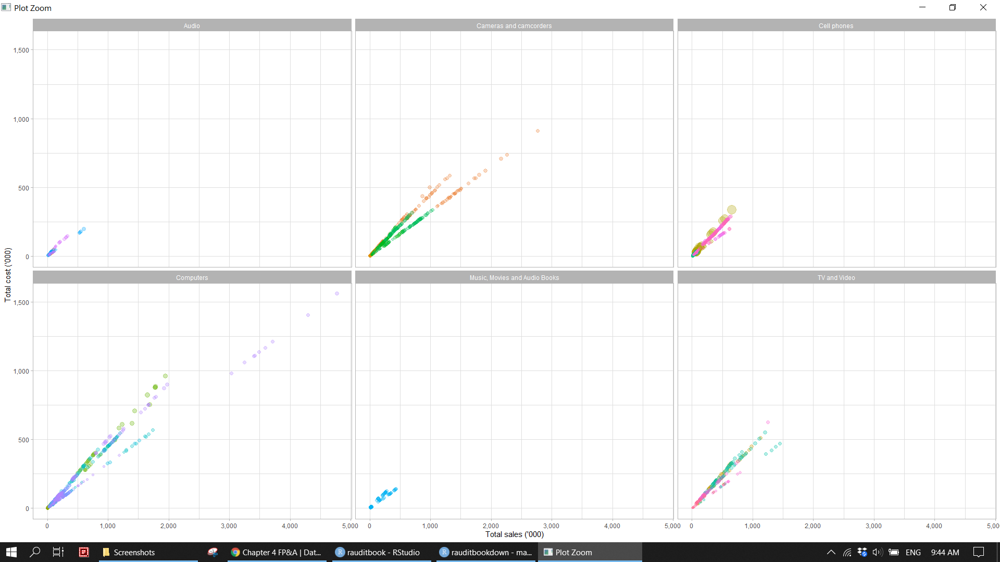
4.3.3 Manufactuer
- Identify the outlier of sales unit price based on manufacturer.
summarizetotal sales amount and percentage of products purchased from manufacturers within each product category andggplotbarchart.
sales_df %>%
mutate(manufacturer = fct_reorder(manufacturer, sales_unit_price)) %>%
ggplot(aes(sales_unit_price, manufacturer), alpha = .3) +
geom_boxplot() knitr::include_graphics("img/fpa_biz_p2.png")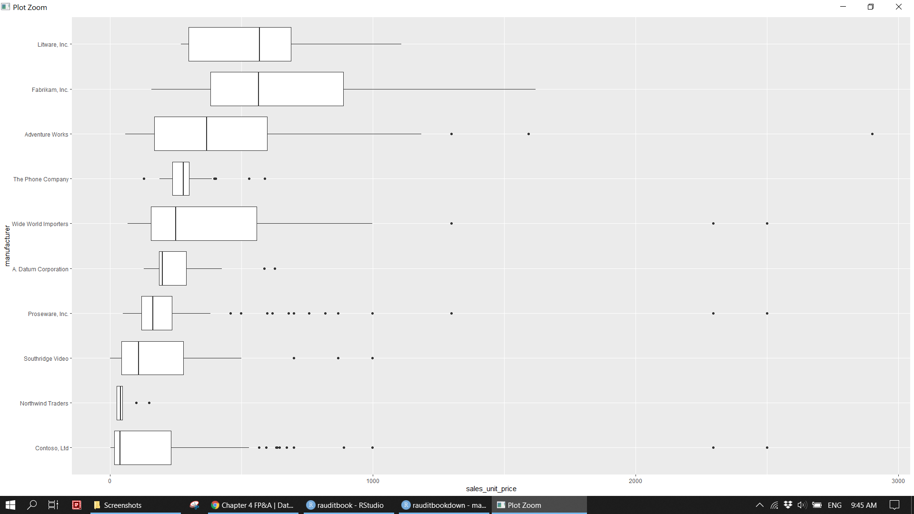
supplier_df <- sales_df %>%
group_by(manufacturer, product_category) %>%
summarise(total_sales_amount = sum(sales_amount),
pct = round(total_sales_amount / sum(sales_df$sales_amount), 2),
.groups = 'drop') %>%
arrange(-total_sales_amount)
text_df <- tibble(manufacturer = unique(supplier_df$manufacturer),
total_sales_amount = 40000)
(p2 <- supplier_df %>%
mutate(manufacturer = fct_reorder(manufacturer, total_sales_amount, sum)) %>%
ggplot(aes(total_sales_amount, manufacturer)) +
geom_col(aes(fill = product_category)) +
geom_text(data = text_df, aes(label = manufacturer), hjust = 0.01) +
scale_x_continuous(labels = scales::label_number(scale = 1e-3, accuracy = NULL, big.mark = ",")) +
scale_fill_discrete(name = '') +
labs(x = "Total sales ('000)", y = NULL) +
theme_minimal() +
theme(legend.position = c(0.86, 0.18),
legend.background = element_rect(fill = 'transparent', color = NA),
axis.text.y = element_blank(),
plot.background = element_rect(fill = NA, colour = NA),
panel.background = element_blank()))knitr::include_graphics("img/fpa_biz_p3.png")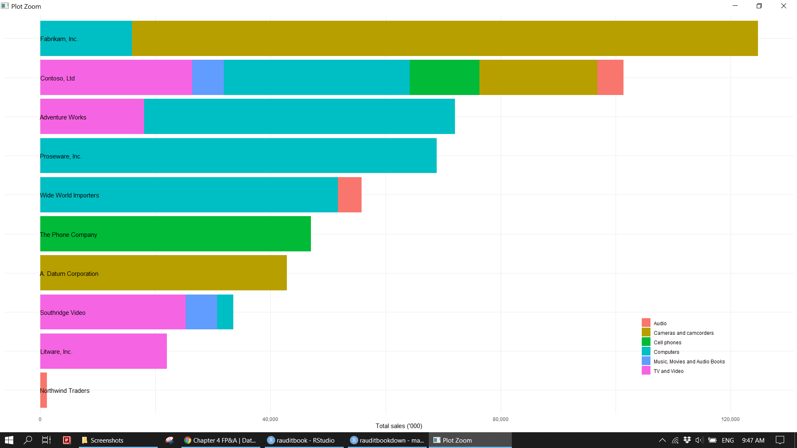
4.3.4 Store
- Calculate total sales amount for each store name.
ggplotemployee count and selling area size to identify outlier. For instance, one small store has more than 300 staffs. - Map store location across the world.
staff_df <- sales_df %>%
group_by(store_name) %>%
mutate(total_sales_amount = sum(sales_amount)) %>%
select(store_name, employee_count, selling_area_size, total_sales_amount) %>%
distinct(store_name, .keep_all = TRUE) %>%
dplyr::filter(!is.na(employee_count))
staff_df %>%
ggplot(aes(employee_count, selling_area_size)) +
geom_point(aes(size = total_sales_amount), alpha = .3, show.legend = FALSE) +
ggforce::geom_mark_ellipse(aes(filter = selling_area_size > 80000,
description = "Typo error?")) +
ggforce::geom_mark_ellipse(aes(filter = employee_count > 300,
description = "Enquery?"))knitr::include_graphics("img/fpa_biz_p4.png")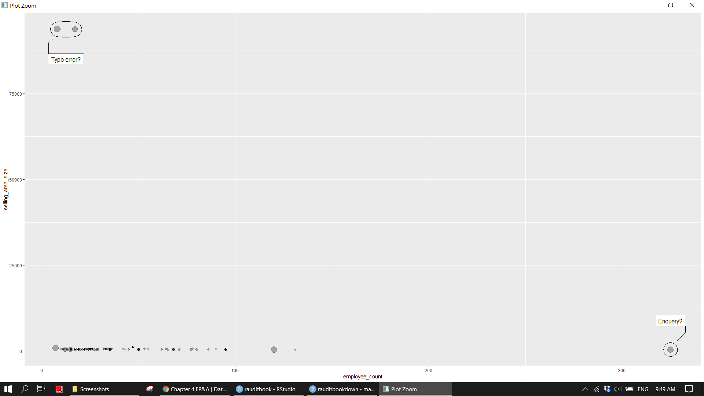
store_map <- map_data("world") %>%
mutate(region = case_when(region == 'USA' ~ "United States",
region == 'UK' ~ "United Kingdom",
region == 'Netherlands' ~ "the Netherlands",
TRUE ~ region)) %>%
left_join(sales_df %>%
group_by(store_name, store_type, region_country_name) %>%
summarise(total_sales_amount = sum(sales_amount),
.groups = 'drop'),
by = c("region" = "region_country_name"))
(p3 <- store_map %>%
ggplot(aes(long, lat, group = group, fill = total_sales_amount)) +
borders("world", colour = "gray85", fill = "gray80") +
geom_polygon() +
scale_y_continuous(limits = c(-60, 90)) +
scale_fill_gradient2(high = "green", low = "red", mid = "pink", midpoint = 18627586) +
ggthemes::theme_map() +
coord_fixed(1.3) +
guides(fill = guide_colorbar(direction = 'horizontal',
title.position = "top",
barheight = unit(0.2, "cm"),
barwidth = unit(4, "cm"))) +
labs(fill = "Total sales")) knitr::include_graphics("img/fpa_biz_p5.png")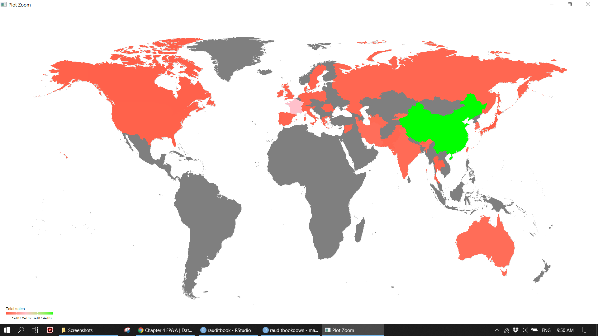
4.4 Info graphic
library(patchwork)
layout <- "
AACCCC
AACCCC
BBCCCC
BBCCCC
"
(p <- p3 + p2 + p1 +
plot_layout(design = layout) +
plot_annotation(title = "Overview of business operations",
subtitle = 'Suppliers | Products | Stores',
caption = 'RAudit Solution LLP\nhttps://stewartli.github.io/tailwindcss/') &
theme(plot.tag.position = c(0, 1),
plot.tag = element_text(size = 8, hjust = 0, vjust = 0)))knitr::include_graphics("img/info_graphics.png")4.5 Report
A nice summary table and plot can be easily included in a Rmarkdown document. A final report is produced in the form of HTML, PDF, and Words.
knitr::include_graphics("img/biz-report.png")
4.6 Dashboard
You might be asked to make a BI dashboard which allows your users to explore data interactively. To learn more, refer to Mastering Shiny
library(shiny)
library(DT)
library(shinyWidgets)
library(bslib)
library(thematic)
theme_toggle <- function() {
div(class = "custom-control custom-switch",
tags$input(
id = "custom_mode",
type = "checkbox",
class = "custom-control-input",
onclick = HTML("Shiny.setInputValue('dark_mode', document.getElementById('custom_mode').value);")
),
tags$label(
"Mode",
`for` = "custom_mode",
class = "custom-control-label")
)
}ui <- fluidPage(
theme_toggle(),
theme = bslib::bs_theme(bootswatch = 'minty'),
sidebarLayout(
sidebarPanel(
width = 4,
fluidRow(
column(6, selectInput("productcat", "Product category", unique(sales_df$product_category))),
column(6, selectizeInput("region", "Region", unique(sales_df$region_country_name)))
),
plotOutput("topsupplier"),
plotOutput("storetype")
),
mainPanel(
width = 8,
DT::DTOutput("tbl")
)
)
)server <- function(input, output, session) {
df <- reactive({
sales_df %>%
dplyr::filter(product_category %in% input$productcat, region_country_name %in% input$region)
})
observeEvent(input$custom_mode, {
session$setCurrentTheme(
if (input$custom_mode) bslib::bs_theme(bootswatch = 'journal') else bslib::bs_theme(bootswatch = 'minty')
)
})
output$topsupplier <- renderPlot({
df() %>%
group_by(manufacturer) %>%
summarise(n = n(),
amt = sum(sales_amount)) %>%
slice_max(order_by = amt, n = 10) %>%
ggplot(aes(n, amt)) +
geom_point() +
scale_x_continuous(label = scales::unit_format(scale = 1e-3, unit = "K")) +
scale_y_continuous(label = scales::unit_format(scale = 1e-6, unit = "M")) +
labs(title = "Top 10 supplier (Frequency vs Amount)",
x = NULL, y = NULL) +
theme(plot.title.position = "plot")
})
output$storetype <- renderPlot({
df() %>%
group_by(store_type, class_name) %>%
summarise(amt = sum(sales_amount), .groups = "drop") %>%
mutate(store_type = fct_reorder(store_type, amt)) %>%
ggplot(aes(store_type, amt, fill = class_name)) +
geom_col() +
scale_y_continuous(label = scales::unit_format(scale = 1e-6, unit = "M")) +
scale_fill_discrete(name = "") +
labs(title = "Sales amount break down (Store type vs Class name)",
x = NULL, y = NULL) +
theme(plot.title.position = "plot",
legend.position = "bottom",
legend.direction = "horizontal",
legend.background = element_rect(fill = "transparent"))
})
output$tbl <- DT::renderDT(server = FALSE, {
df() %>%
select(product_subcategory, product_name, store_name, employee_count, selling_area_size) %>%
mutate(product_name = str_trunc(product_name, width = 40, ellipsis = "...")) %>%
rename_with(function(x) str_to_title(str_replace_all(x, "_", " ")), everything()) %>%
DT::datatable(
caption = htmltools::tags$caption(style = 'caption-side: top; text-align: center;',
paste0("Table: ", input$productcat, " in ", input$region)),
extensions = c("Scroller", "FixedColumns", "Buttons"),
options = list(
dom = "Bfrtip",
pageLength = 15,
buttons = c("copy", "print", "csv", "excel", "pdf")
)
)
})
}
thematic::thematic_shiny()
shinyApp(ui, server)knitr::include_graphics("img/dashboard1.png")knitr::include_graphics("img/dashboard2.png")